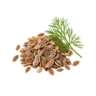

होम / सुआ

सुआ का भाव आज | Dill Mandi Price Today
सुआ के आज के उपलब्ध मंडी भाव देखें—उंझा, पाटन, डीसा और नीमच के मॉडल, न्यूनतम और अधिकतम रेट।
नीचे मंडी-वार सूची में सुआ के उपलब्ध भाव दिए हैं। मंडी के नाम पर क्लिक करके उस मंडी की दूसरी फसलों के भाव भी देख सकते हैं।
सुआ (सिंधी सुआ) मंडी भाव आज: मेड़ता, ऊंझा, राजकोट मंडी रेट प्रति क्विंटल
राम राम किसान भाइयों!
देशभर की मसाला व कृषि उपज मंडियों में सुआ (Dill Seeds) एक अत्यधिक महत्वपूर्ण, औषधीय और नकदी मुनाफा देने वाली प्रमुख मसाला फसल है। क्षेत्रीय बोलचाल और व्यापारिक भाषा में इसे अलग-अलग स्थानों पर सुवा, सोआ, सवा या सिंधी सुआ के नाम से जाना जाता है। अंतरराष्ट्रीय स्तर पर और अंग्रेजी व्यापार जगत में इसे Dill Seeds / Suva Seeds तथा इसकी ताजी हरी पत्तियों को Dill leaves (सुवा भाजी) कहा जाता है। पश्चिमी भारत में राजस्थान का नागौर जिला और विशेष रूप से मेड़ता मंडी, जोधपुर, बीकानेर, बाड़मेर तथा गुजरात की प्रमुख मसाला मंडियां जैसे ऊंझा, राजकोट और गोंडल, सिंधी सुआ के व्यापार के सबसे बड़े केंद्र माने जाते हैं। घरेलू रसोई, आयुर्वेदिक दवा निर्माण, खाद्य प्रसंस्करण और अंतरराष्ट्रीय निर्यात में भारी खपत होने के कारण मंडियों में सुआ के दैनिक भावों पर किसानों, स्थानीय आढ़तियों और निर्यातकों की सालभर गहरी नजर रहती है।
सुआ (सोआ) का बहुआयामी बाजार और दोहरी मांग
सुआ एक ऐसी अनोखी उपज है जिसका बाजार दो पूरी तरह अलग-अलग व्यापारिक स्तरों पर संचालित होता है:
- हरी पत्तियां व भाजी (Suva / Dill Leaves): स्थानीय सब्जी मंडियों में सुवा की ताजी हरी पत्तियों की मांग सर्दियों और बसंत में चरम पर रहती है। अपनी विशिष्ट सुगंध, पाचन सुधारने वाले औषधीय गुणों और पारंपरिक व्यंजनों में उपयोग के कारण सुवा की सब्जी आम उपभोक्ताओं के बीच काफी पसंद की जाती है। सब्जी उत्पादक किसान इसकी समय से कटाई कर दैनिक नकद आय प्राप्त करते हैं।
- सूखे बीज (सिंधी सुआ): मसाला, किराना और कमोडिटी मंडियों में असली बड़ा कारोबार सुआ के बीजों का होता है। सिंधी सुआ के सूखे बीजों का उपयोग मुख्य रूप से आयुर्वेदिक पाचन चूर्ण, ग्राइप वाटर, हर्बल तेल, अचार मसाला मिश्रण और माउथ फ्रेशनर (मुखवास) उद्योग में बड़े पैमाने पर कच्चे माल के रूप में किया जाता है।
सुआ का थोक क्विंटल भाव बनाम खुदरा प्रति किलो भाव
थोक कृषि उपज मंडियों में सुआ का सौदा मुख्य रूप से प्रति क्विंटल के आधार पर तय होता है, जबकि खुदरा दुकानों, आयुर्वेदिक फार्मेसियों और ऑनलाइन ई-कॉमर्स प्लेटफॉर्म्स पर आम उपभोक्ता व कंपनियां इसे प्रति किलो (Dill Seeds price per kg) के ऊंचे खुदरा भाव पर खरीदती हैं। जब किसान सीधे प्राथमिक थोक मंडी में अपनी साफ उपज पेश करते हैं, तो उन्हें बिचौलियों के बिना सीधे बेहतर दाम मिलते हैं।
सिंधी सुआ के मंडी भाव तय करने वाले प्रमुख व्यापारिक मानक
मंडियों में सुआ का रेट केवल स्थानीय आवक से तय नहीं होता, बल्कि कई गुणवत्ता और बाजार मानकों पर निर्भर करता है:
- दाने की बनावट, रंग और बोल्डनेस: मंडी में सिंधी सुआ की ढेरी लगते ही व्यापारी सबसे पहले उसके दाने का आकार और प्राकृतिक रंग परखते हैं। हल्का हरापन लिए हुए सुनहरे, चमकदार, चपटे और बड़े (बोल्ड) दानों वाले लॉट को सबसे ऊपरी प्रीमियम भाव मिलता है। यदि दाना सिकुड़ा, अपरिपक्व या अत्यधिक धूप व मौसम से काला पड़ चुका हो, तो उसके भाव में भारी कटौती की जाती है।
- सफाई का स्तर (मशीन क्लीन बनाम सॉर्टेक्स ग्रेड): सुआ की कीमत में सफाई सबसे बड़ा कारक बनती है। खेत से सीधे निकले सामान्य माल में बारीक तिनके, डंठल और धूल होती है, जिसका भाव कम रहता है। इसके विपरीत, मशीन क्लीन (डबल छना हुआ) और सॉर्टेक्स (पूरी तरह कचरा व पत्थर रहित) माल को निर्यातक और बड़ी मसाला कंपनियां हाथों-हाथ सबसे ऊंची बोली लगाकर खरीदती हैं।
- प्राकृतिक तेल और सुगंध (Essential Oil Percentage): सिंधी सुआ की वास्तविक कीमत उसमें मौजूद वाष्पशील तेल (Dill Oil) और उसकी तीखी खुशबू में होती है। औषधि और हर्बल एक्सट्रैक्ट बनाने वाली औद्योगिक कंपनियां उन लाटों को प्राथमिकता देती हैं जिनमें तेल की मात्रा अधिक हो, और इसके लिए वे सामान्य मंडी भाव से अतिरिक्त प्रीमियम देने को तैयार रहती हैं।
- मेड़ता मंडी का व्यापारिक प्रभाव और मौसमी आवक: राजस्थान की मेड़ता मंडी पूरे देश में सिंधी सुआ के भावों का मुख्य पैमाना मानी जाती है। रबी फसल के बाद, यानी मार्च से मई के महीनों में जब नई फसल की कटाई होकर मंडियों में भारी आवक पहुंचती है, तब थोक भाव अपेक्षाकृत संतुलित स्तर पर रहते हैं। जैसे-जैसे पीक सीजन समाप्त होता है और मंडियों में दैनिक आवक घटती है, बाजार में स्टॉक की मांग बढ़ने से भावों में तेजी का रुख बन जाता है।
- वैश्विक निर्यात मांग और अंतरराष्ट्रीय आर्डर: भारत से सिंधी सुआ का बड़ा हिस्सा अमेरिका, यूरोप, खाड़ी देशों और दक्षिण-पूर्व एशिया में निर्यात किया जाता है। जब अंतरराष्ट्रीय स्तर पर विदेशी खरीदारों के टेंडर और सौदे खुलते हैं, तो घरेलू मंडियों में सुआ के भाव में तुरंत बड़ा उछाल देखने को मिलता है।
किसानों के लिए अधिकतम भाव और शुद्ध मुनाफा कमाने की रणनीति
सुआ की फसल से अपनी मेहनत का पूरा मूल्य पाने के लिए तुड़ाई और बाजार प्रबंधन पर ध्यान देना जरूरी है:
- गहाई (थ्रेशिंग) का सटीक समय: सुआ के पौधों की कटाई तभी करें जब उनके छत्ते (Umbels) पूरी तरह पककर सुनहरे भूरे रंग के हो जाएं। अधिक कच्चा काटने से दाना सिकुड़ जाता है और जरूरत से ज्यादा पकाने पर खेत में दाने बिखरने का जोखिम रहता है।
- नमी नियंत्रण और सुरक्षित सुखाई: गहाई के बाद दानों को पक्के फर्श या तिरपाल पर फैलाकर अच्छी तरह सुखाएं। बीजों में बिल्कुल भी नमी नहीं रहनी चाहिए; नमी वाला माल बोरों में बंद होने पर फंगस पकड़ लेता है और दाना काला पड़ जाता है, जिससे मंडी में उसकी कीमत आधी रह जाती है।
- घर पर ही प्राथमिक छंटाई: मंडी ले जाने से पहले साधारण छलने से बारीक डंठल, सूखे पत्ते और मिट्टी अलग कर लें। साफ-सुथरी ढेरी देखकर आढ़तियों के बीच प्रतिस्पर्धा बढ़ती है और वे बिना किसी कटौती के उच्चतम भाव लगाते हैं।
- मेड़ता और ऊंझा मंडी के रुझानों पर नजर: माल बेचने से पहले मेड़ता मंडी और गुजरात के ऊंझा बाजार की दैनिक आवक और निर्यात रुझानों की जानकारी रखें। जब बाजार में तेजी का दौर हो, तभी अपनी उपज मंडी में उतारें ताकि आपको अपनी मेहनत का सर्वोत्तम मूल्य प्राप्त हो सके।
अक्सर पूछे जाने वाले सवाल
सुआ और सुआ पत्ती में क्या अंतर है?
सुआ सूखे बीज वाली मसाला फसल है, जबकि सुआ पत्ती उसी पौधे की ताजी हरी पत्तियां हैं। दोनों की बिक्री का रूप, उपयोग और भाव अलग-अलग समझें।
सुआ का भाव किस इकाई में देखें?
सुआ सूखे बीज के रूप में दर्ज हो तो उसका भाव प्रति क्विंटल देखना उचित है। उपलब्ध मंडी रिकॉर्ड में न्यूनतम, मॉडल और अधिकतम रेट साथ में मिलेंगे।
सुआ के भाव में कौन-सी बातें फर्क डालती हैं?
दाने की सफाई, नमी, खुशबू, एकरूपता, स्थानीय आवक और खरीदारों की मांग के अनुसार सुआ के अलग-अलग लॉट का भाव बदल सकता है।